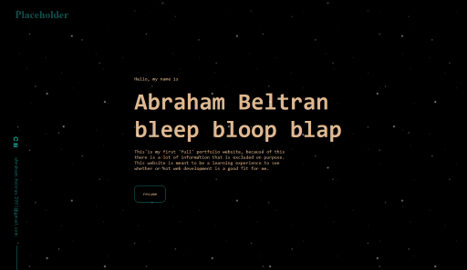
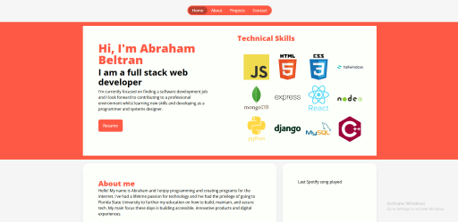
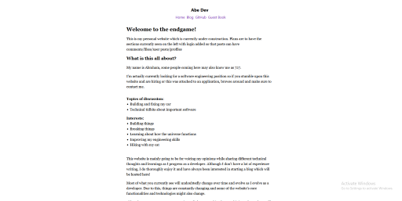

How was this website made?
This website has undergone many redesigns and iterations, starting with something more involved than this layout, and then slowly progressing to simplicity over time.
- 
- 
- 
What is the stack? How is it hosted?
The website is currently using nginx and gunicorn on an Ubuntu droplet hosted by DigitalOcean. The entire website is written using Django with plugins like markdownify to generate the blog and some WebSocket magic for some other areas of the website.
Why go through all the trouble making this?
The main purpose of the website was to host projects that I have been working on over the past few months as well as hosting some of them here. The website is built with Django for this reason specifically so more 'apps' can be added onto the main site.
Most importantly making this website was fun and helped me learn some new libraries I hadn't used before. At the end of the day, it's all worth it
More information
If you're looking for something specific, the information will be available on this page in the form of a Johnny Decimal system in the future. For now, here are links to external websites where you can find more about me and my projects.